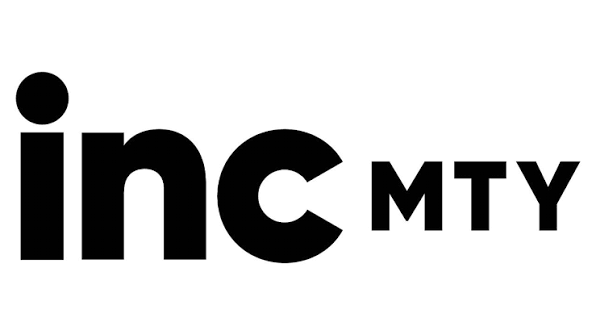
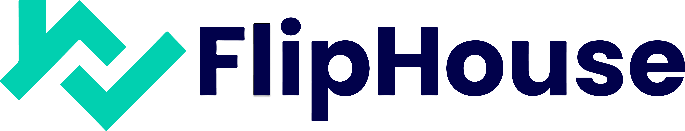
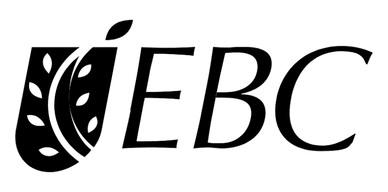
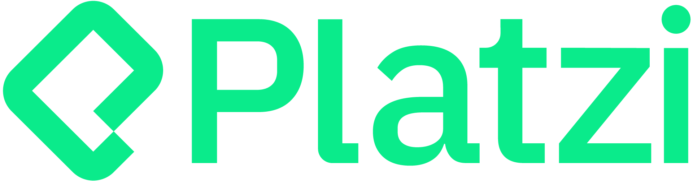
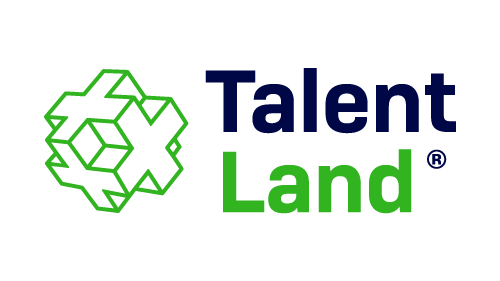
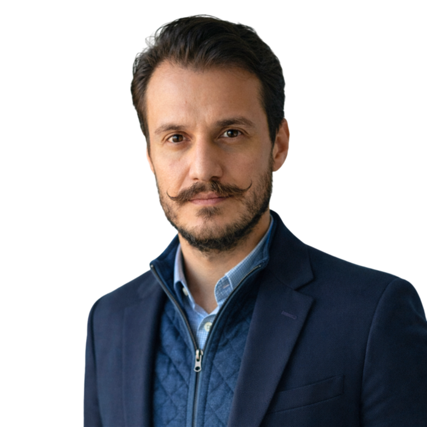
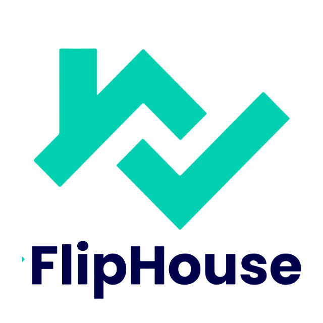
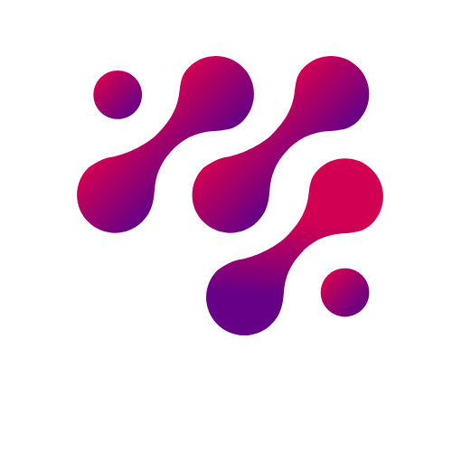

Tienes la estrategia, el presupuesto y el equipo. Lo que falta es el sistema que conecta todo y lo pone a ejecutar. Eso construyo yo.





Diseño y opero sistemas que convierten estrategia en ejecución real. Programas de innovación, arquitecturas RevOps y ecosistemas de emprendimiento en LATAM.

Entro a operaciones que dependen de la memoria de una persona, de un Excel o de la buena voluntad del equipo. Mapeo el proceso real, diseño el sistema que lo reemplaza y lo opero hasta que funciona sin mí. El entregable no es un reporte. Es un sistema que tu equipo sostiene cuando yo ya no estoy.
Ese freno casi siempre vive en la brecha entre dos idiomas: el del board y el de la trinchera. Traduzco entre los dos hasta que tu equipo opera el sistema solo. No traduzco para que se entiendan, traduzco para que ejecuten. Es la misma disciplina detrás del +600% de crecimiento regional en el sureste (HEINEKEN Green Challenge, registros sureste, edición 3 vs. edición 1, 2019-2021) y del payback modelado menor a un mes en FlipHouse (metodología disponible a solicitud).
Tres contextos que no se parecen en nada: una operación comercial, un programa corporativo nacional y un ecosistema construido desde cero. El método es el mismo. Cada caso incluye su autopsia, porque los errores también son evidencia.


No improviso por cliente. Aplico una secuencia que ya probé a escala, sin colapsar la operación. El método no cambia. Cambia el caos al que se aplica.
REDUX, HackSureste Ops y SOFI no son proyectos sueltos. Son implementaciones del mismo sistema operativo: una forma documentada de decidir, diseñar y transferir que hace el resultado repetible. Entrego sistemas, no tareas.
Opero IA a nivel de sistema, no como moda. Este sitio es la prueba: lo construí para humanos y para los agentes de IA que hoy filtran talento antes de que un humano lo lea.
Cobro por resultado (RODI), no por horas. Los tres modelos son públicos. Elige por el problema que tienes, no por el nombre del servicio.
Una búsqueda C-Suite tarda meses solo en reclutamiento. Después, esa persona todavía tiene que aprender tu operación. Diseño y opero programas desde hace 10+ años (7+ en innovación y ecosistemas). Entro sabiendo diagnosticar. En FlipHouse, el sistema opera con payback modelado menor a un mes, metodología disponible a solicitud.
Pero la razón real no es la velocidad. El entregable no es otra persona de la que dependa el sistema. Es un sistema que el equipo opera sin mí. Contratar full-time para diseñar un sistema es pagar salario permanente por un trabajo con fecha de cierre. Yo diseño, implemento, documento y entrego. Si después necesitas a alguien full-time para operar lo que construí, llega sabiendo exactamente qué hereda.
¿Estás contratando full time? Trabajo como director fraccional o por proyecto, y también considero roles full time de dirección de programas y operaciones donde el reto sea construir el sistema, no solo administrarlo. Descargar CV · LinkedIn
Diagnóstico de 30 minutos: gratuito, confidencial y sin pitch. Trabajemos juntos o no, sales con más claridad sobre tu problema de la que traías al entrar.